El colectivo de más de 400 profesores de Religión que trabaja en los centros públicos de Catalunya en los que se imparte la ESO y el Bachillerato - - los institutos de enseñanza secundaria ( IES ) - - pierde clientela a pasos agigantados.

A la deserción de unos 10.000 escolares en los últimos tres años , por efecto de la caída demográfica y la menor elección de la materia confesional , se añade la fuga de alumnos que se registra por la reducción horaria que Ensenyament ha introducido en la franja dedicada a las enseñanzas opcionales.
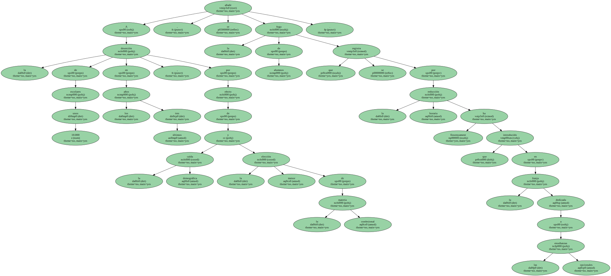De los casi 27.000 estudiantes de ESO y Bachillerato de la red pública ( incluido el BUP , que aún no había desaparecido ) que se alistaron a la clase de Religión en el curso 1997-98 se ha pasado a 16.500 en el actual.
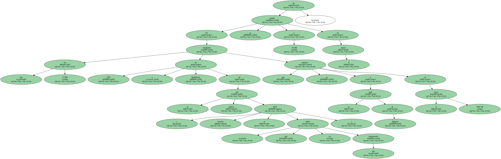De esa cifra , al menos dos tercios renuncian , en la práctica , a su pretensión inicial ante la imposibilidad de hallarle un aposento en el horario que sea compatible con el resto de sus intereses , según fuentes docentes y eclesiásticas.
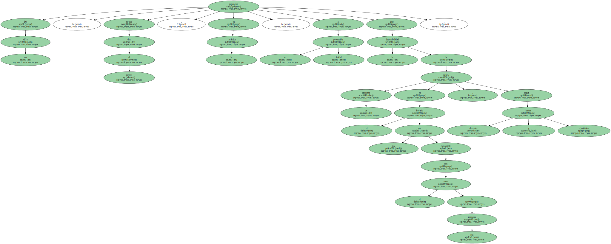RECORTE SALARIAL.
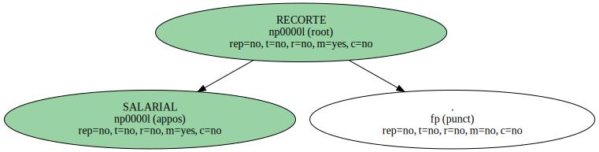Las consecuencias han comenzado a hacerse muy evidentes al inicio del curso actual.

Al menos una cuarentena de docentes , un 10% de los empleados en los institutos catalanes , han sufrido una reducción de su jornada laboral , lo que implica un recorte salarial , según los datos facilitados por la Asociación de Profesores de Religión de Catalunya , que han sido corroborados por fuentes eclesiásticas.
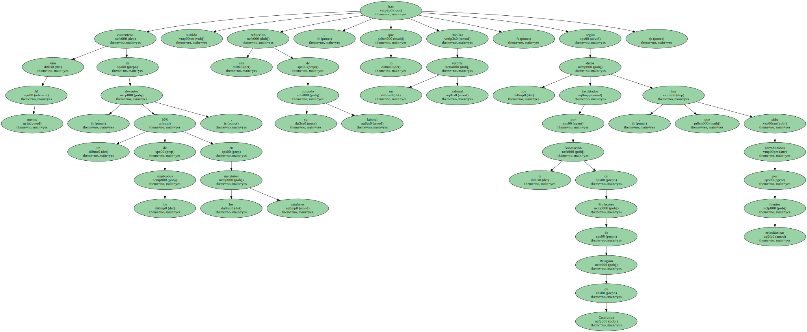La práctica totalidad de los profesores que imparten la disciplina en Catalunya son laicos.
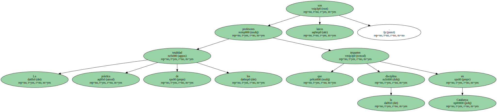Sus males comenzaron a aflorar en 1999 , al tiempo que las disposiciones de la Conselleria d ' Ensenyament promovían el aumento del tiempo invertido en ampliar o reforzar los contenidos de Lengua y Literatura , Idioma Extranjero , Ciencias Sociales y Matemáticas.
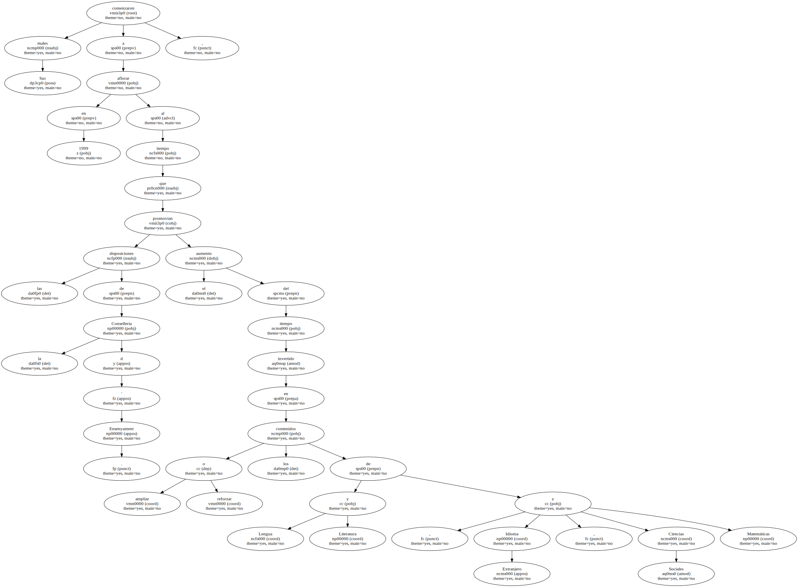Paralelamente , la parte no común del currículo de la ESO quedaba reducida a la mitad.
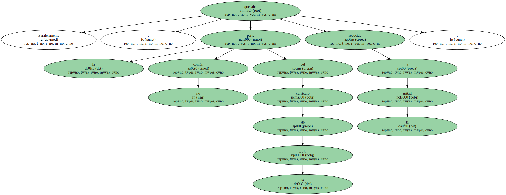LA COMPETENCIA.
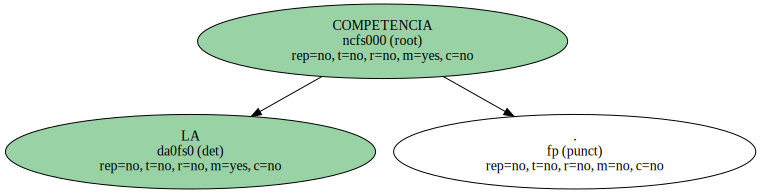Las 1.260 horas reservadas a las materias de libre elección , a lo largo de los cuatro cursos de la ESO , se han quedado en 600.
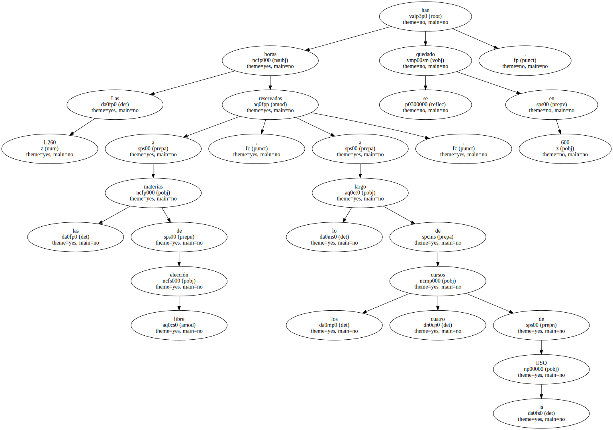Y en ese terreno de juego , que ha menguado a la mitad , la religión ha de competir con rivales como la Informática , la iniciación al vídeo , los experimentos de química , la práctica de deportes americanos o las experiencias musicales.
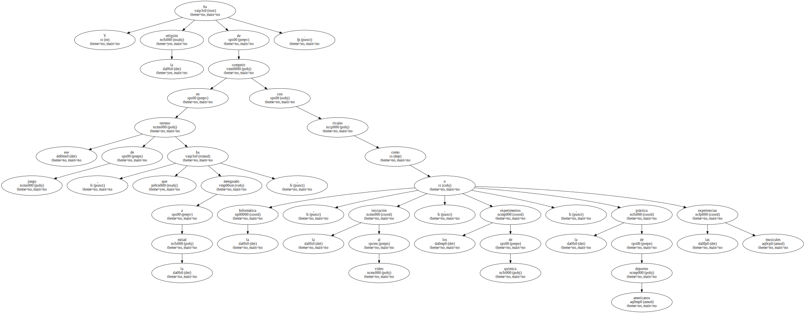De este modo , la elección de la clase de Religión , que tiene carácter voluntario , se ha convertido " en un acto de heroísmo " , señala el responsable del Secretariat de l ' Escola Cristiana de Catalunya , Francesc Riu , en el que la Iglesia catalana delega la gestión de la materia confesional en las aulas públicas.
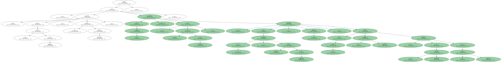